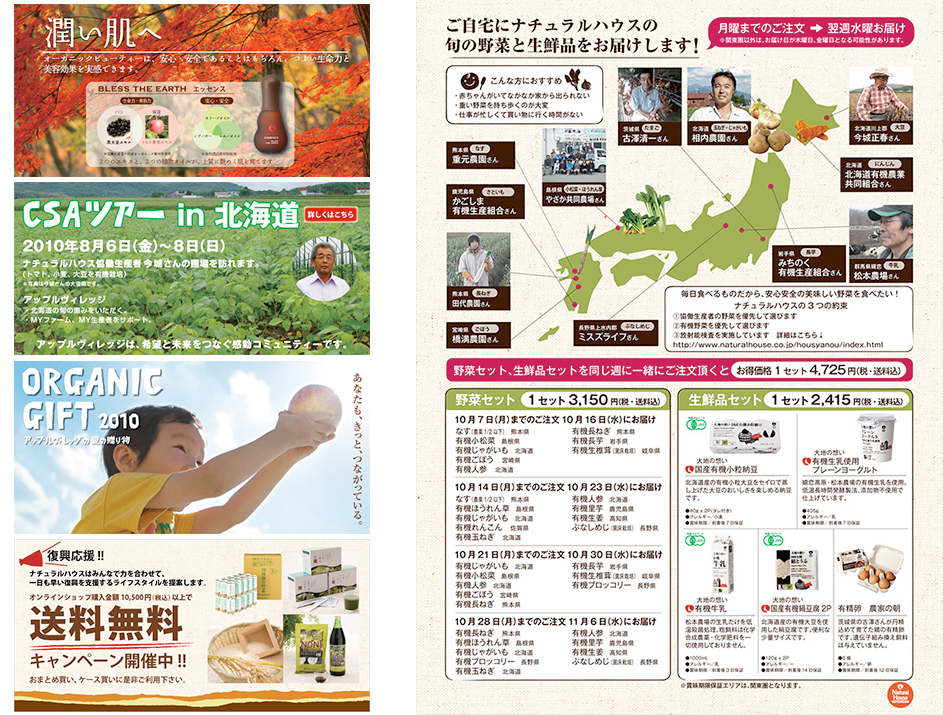

Feb.2012--Dec.2013
自然食系スーパー
特集LP作成、ページの更新(HTML,CSS,CMS 内に手打ち)、バナーなどを担当。
商品撮影から、CMSによる個別商品ページの作成 (画像切抜き・レタッチ)。
定期購入チラシ(入稿はせず150dpi程度で社用レーザープリンタで対応のもの)などの作成。また通販カタログ作成時は画像の切り抜きなどカタログ作成補助。
上記の他、お客様からの電話による受注、在庫確認や欠品の対応。発注業務、経費処理対応などの一般事務も対応。
※現在リニューアル後で当時と違います。
http://www.naturalhouse.co.jp/
http://www.naturalhouse.jp/
